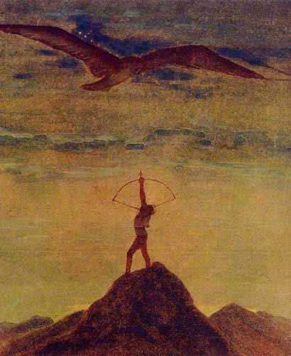

„Šaulys“
|

|
 |
|
SALOMĖJA NĖRIS Iš M. K. Čiurlionio paveikslų ŠAULYS Rieda saulė — Ugnies kamuolys.— Per pasaulį Žygiuoja šaulys. Šalta žemėje, liūdna tenai: Dengia saulę juodi slibinai. Juodo paukščio sparnai dideli,— Per šešėlius pražvelgi negali. Saule degantį Šaulį prašau: — Juodą negandos Paukštį nušauk! Įtempta raumenų geležis,— Kad laisva būtų žemė graži, Kad sušiltų, atgytų gamta,— Raumenų geležis įtempta. Saulė kaitins Vėl jūras, žemes.— Saulės kraitį Sukrausim ir mes. |
Užklausa paveikslelio generavimui: Juodi debesys ir tamsus paukštis trukdo saulės šviesai pasiekti žemę. Žemėje yra šalta ir liūdna, nes saulės šviesa paslėpta po juodais dideliais paukščio sparnais. Šaulio, laikančio lanką, nukreiptą į viršų, į dangų, raumenų geležis simbolizuoja jėgą. Už kalnų vos matomi geltoni atspalviai suteikia vilties, kad vieną dieną saulė grįš ir vėl sušildys pasaulį, yra. Angliškas vertimas generavimo įrankiui: DeepImg: Black clouds and a dark bird prevent sunlight from reaching the ground. It is cold and sad on the ground because the sunlight is hidden under the black wings of a large bird. The iron in the muscles of the archer holding his bow pointing upwards towards the sky symbolises strength. The yellow hues barely visible behind the mountains give hope that one day the sun will return and warm the world again. |